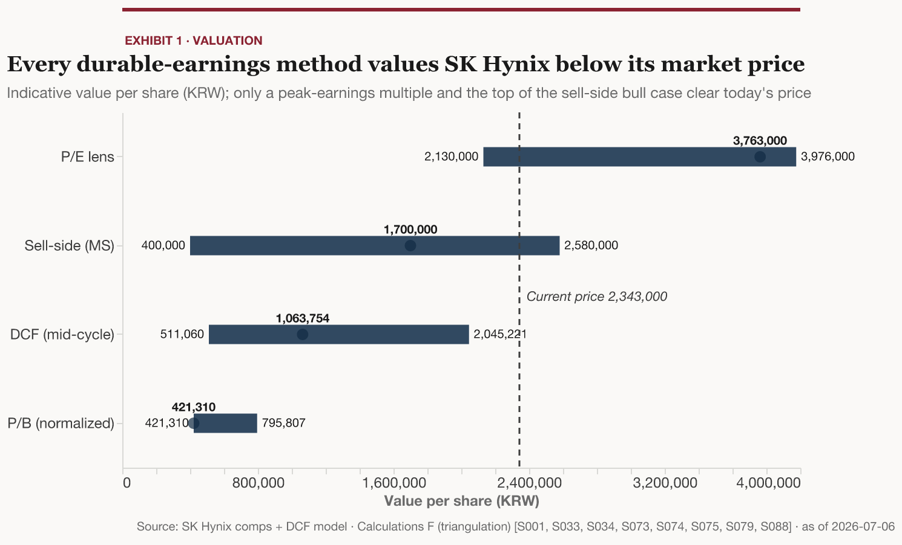

SK Hynix is priced for permanent peak-cycle memory margins. It is at once the cheapest and the most expensive large-cap in memory — a 6.6x forward P/E against an 11.03x price-to-book near a five-year high — and every durable-earnings method resolves the paradox against the stock. All of them land below the 2,343,000 won price: the DCF spans 511,060 (bear) to 2,045,221 (bull) with a 1,063,754 base, and even Morgan Stanley's Overweight target of 1,700,000 now sits under the quote; only a peer multiple on peak earnings clears it. This is a valuation-discipline underweight, not a short — the near term is locked (HBM sold out about three years, ~35T won net cash, Q2 prints July 29) and the whole quarrel is the durable operating margin the year after next.
6.6x12-month forward P/E — the cheapest large-cap in memory, low only because its denominator is a cyclical-peak earnings number[S079]
11.03xPrice-to-book — near a five-year high and ~6x the 1.8x through-cycle median; the lens no single quarter can flatter[S082]
2,343,000Share price, 6 Jul 2026 (KRW) — the quote every durable-earnings method values the stock below[S001]
1,700,000Morgan Stanley Overweight base target (KRW) — even the sell-side bull case now sits under the market price[S033]
3Years of HBM demand already booked beyond capacity — effectively sold out; the near term is locked, so this is an underweight, not a short[S058]
What it means
Two lenses, one debate: at 6.6x forward earnings SK Hynix is the cheapest large-cap in memory; at 11.03x book — near a five-year high and roughly six times its 1.8x through-cycle median — it is among the most expensive. The cheap read only holds if today's peak margins become permanent; the book read is the one no single quarter can flatter.
Every durable-earnings method lands below the 2,343,000 won price. The DCF runs 511,060 (bear) / 1,063,754 (base) / 2,045,221 (bull) — the base ~55% under the market, the bull still ~13% under — and a normalized price-to-book lens agrees; only a peer multiple applied to peak EPS clears the quote.
The disagreement reduces to one input: the operating margin SK Hynix earns through the cycle. It printed a 72% margin in Q1 2026; the base case normalizes toward ~38%, and the sensitivity tornado shows that margin — not rates or next year's revenue — swings fair value most. The 2027 contract-pricing cycle adjudicates it.
Not a short: HBM is effectively sold out about three years, the balance sheet holds ~35T won of net cash, and Q2 prints July 29 into a strong setup — so the call is a valuation-discipline underweight, best expressed after the July 10 Nasdaq ADR listing clears. The change-my-mind case is HBM margins holding durably above 38%.

Football field — every durable-earnings method (DCF bear/base/bull and normalized price-to-book) values SK Hynix below the 2,343,000 won price; only a peak-earnings multiple and the top of the sell-side bull case clear it.
Go deeper
Valuation — the football field — The full triangulation: the DCF range, the peer screen on peak EPS, and the normalized-book lens, all set against today's price.
Variant view — Why the market is paying for permanent peak margins, and where our normalization of the through-cycle margin differs from consensus and the sell-side.
Scenarios — Bear / base / bull built off the 2027 margin, and why the asymmetry skews down even with a locked, cash-rich near term.
Competitive position & moat — The HBM share lead and the MR-MUF/TSV packaging moat — and the narrowing gap as Samsung and Micron qualify on the same NVIDIA socket.
Risks & what would change my mind — The margin-durability kill criteria and the change-my-mind case if HBM proves a structurally higher-margin product than commodity DRAM.